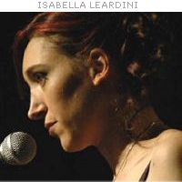
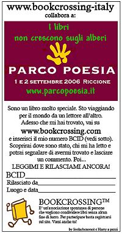
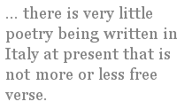

For the past couple of years a poetry festival has been held in Riccione, a resort town on the Adriatic coast in Emilia Romagna. The festival was started by a clever twenty-five-year-old riccionese poet, Isabella Leardini, with the help of some poet friends. They wanted to launch an annual event featuring emerging poets, ages twenty to forty, with a solid presence also of several established “guest” poets. The town of Riccione, various local businesses, and the Centro della poesia contemporanea at the University of Bologna sponsor the event. I went to it last year to meet some Italian poets; to visit with the Milanese poet Franco Loi, whose work I’ve been translating; and to get a bit more insight into contemporary Italian poetry.
I took the train to Riccione, via the Ancona line from Bologna, on the first Friday in September. The platform was packed with people going to the beach for the weekend, some of them no doubt headed out for a longer late-summer vacation. Ancona is the major port in that region of Italy from which people take ferries to Corfu or elsewhere in the Ionian islands, or to Croatia, a popular beach-holiday spot these days.
The last stop before Riccione was Rimini, of Paolo and Francesca fame, or, more recently, that Sigismondo Malatesta who comes up a lot in Pound’s Cantos and who is commemorated by Leon Battista Alberti’s great monument. Nowadays it’s known mostly as a party spot for middleclass beach goers, the shoreline obliterated by hotels and discos.
Touristed Riccione is like Rimini, only smaller and a bit more upscale. When I told my father, who grew up in fascist Rome, that I was going to Riccione, he said, “Oh, nice,” but I knew he was recalling the Italy of his youth, before he emigrated to the United States after marrying my American mother. Riccione then was a destination of the rich and famous, the way parts of Sardinia are today for Silvio Berlusconi and others. Now there is a black-and-white poster-photo of Gina Lollobrigida on a main shopping street in town, beside the caption “Riccione, 1960.”
A recent article in Il Messaggero (a conservative daily newspaper based in Rome) said that there is a widespread “creative depression” and lack of new ideas in contemporary Italy, even though more books are being published than ever before: “Masses of creativity: but is there such a thing as mass-creativity? . . . The paradox of creativity in literature converges with the paradox of democracy: if everyone has a voice, how many have authentic voices? Howcan we avoid a polyphony that becomes white noise?” In Italy, as elsewhere, there has been a poetry “boom” since the 1960s. Not many people besides poets read the stuff, however. According to Italian newspapers, contemporary Italians read less than other Europeans, and of course poetry is the least read of all. On the other hand, Milan’s Corriere della Sera recently offered a special deal on poetry books — Dante, Montale, Pessoa, Baudelaire, and others — for buyers of the paper. A huge number sold, although it’s another question how many were actually read. In any case, no one disputes that there is a plethora of poets and writers.
The Riccione festival, called Parco Poesia, started on Friday afternoon and ended late Saturday night. It took place in the main park of Riccione, near the train station. A gravel drive leads up to a nineteenth-century villa, beside which a stage was set up, and plastic chairs for about 150 people. Alongside the walkway and around the stage, draped over big metal racks, were canvases with verses painted on them, poems of the better-known poets at the festival, but also of Raymond Carver, Rilke, Zbigniew Herbert, Eliot, and others. There were a couple of tables near the stage, where books were on sale throughout the weekend, including translations of Sexton, Lowell, and Carver.
There were no fewer than forty-six poets on the agenda for the weekend — ten well-known poets and thirty-six poeti emergenti. Of the established poets there, perhaps the best known in the United States are Milo De Angelis and Umberto Piersanti, both of whom appeared in the 1989 Poetry anthology dedicated to postwar Italian poetry and in Dana Gioia and Michael Palma’s New Italian Poets (1991). The other guest poets, all of them leading names on the scene, were Antonella Anedda, Ennio Cavalli, Gianni D’Elia, Umberto Fiori, Franco Loi, Giancarlo Majorino, Antonio Riccardi, and Davide Rondoni. And among the emerging poets were several who already have won prestigious prizes. Much of the weekend was taken up with readings, but there were also several panel discussions on Saturday afternoon, including presentations by small-press poetry publishers, and an open workshop.
I arrived at the park an hour or so before the festival began. Several of the younger poets read first, and then Majorino and Piersanti. Majorino and Piersanti were both magisterial in their presence and had silky reading voices. Majorino, who is from Milan, is in his early seventies. He is one of the quarta generazione poets (“fourth generation,” named after an important anthology in the 1950s), born in the 1920s or so, along with Andrea Zanzotto, Giuseppe Raboni, Maria Luisa Spaziani, Giuseppe Giudici, Franco Loi, Aida Merini, Luciano Erba, and Edoardo Sanguineti. Majorino was striking up there on the stage, with his silver hair combed back, his white trousers and black T-shirt, and his resonant intonations. Like many of the linea lombarda, or Milanese poets, Majorino’s poetry is neorealist and anti-lyrical, conversational in style, self-consciously stripped of literariness. Piersanti, who is from Urbino and is in his early sixties, writes fragmented narratives and evocations of the landscape of Urbino, in a richly textured language, usually without punctuation, that echoes D’Annunzio and Pascoli. A voluble, burly man with a flush face and a deep voice, he was a force throughout the weekend.
Piersanti was one of the most vocal people at a Saturday afternoon discussion — an especially popular event — called “What Use Are Poets? What Do You Bring or Offer?” A moderator stood at the front of the audience, near the stage, and called on people to make comments into the microphone, which he brought to their seats. Piersanti blamed the neoavanguardia of the 1960s for making poetry less accessible. He joked that Sanguineti and other avant-gardists used to claim that poetry was dead even as they published a book of poetry every other year. Like several other people at the festival, Piersanti thought that a commonsense, nonacademic, but well-informed criticism was essential for sorting out what’s important in poetry from what isn’t. Thousands of people are writing poetry now, he said, and everyone who writes deserves to be respected, but only relatively few poets are going to matter in the long run. A thirty-one-year-old critic named Marco Merlin, editor of Atelier literary review, seconded the notion that criticism should create a forum in which people from all walks of life can keep a lively discussion going. In other words, there needs to be a broad community that can recognize good poetry when it comes along. Another up-and-coming young poet-critic who was there was Daniele Piccini, who often writes criticism for Italy’s most visible poetry magazine, Nicola Crocetti’s Poesia.
Milo De Angelis, who is from Milan, is a leading figure from the generation of poets born in the 1940s or early 1950s, along with, for example, Gianni D’Elia and Umberto Fiori (both at the festival), Maurizio Cucchi, Cesare Viviani, Giovanna Sicari, and Giuseppe Conte. De Angelis was soft-spoken during much of the festival but was a warm presence and reader of his own poetry. His writing is dense and difficult at times, with a strong philosophical bent. When I asked him what he feels is the most important single factor in contemporary Italian poetry, he answered, without hesitation, freedom from the old political ideologies, whether right wing or left wing. Piersanti echoed this notion during a small-press panel led by Gianfranco Lauretano and Davide Brullo, poetry editors of Raffaelli Editore in Rimini. Lauretano, who is also a poet and coedits the Bologna-based journal clanDestino with Davide Rondoni, had raised the topic of poetry criticism in Italy. Piersanti’s two cents was that the dogmatically leftist politics of the Italian intelligentsia had been responsible for preventing serious critical evaluation of a lot of Italian poetry — D’Annunzio’s, for example, since he was a fascist sympathizer. D’Annunzio is more openly appreciated at present, for the reason given by De Angelis.
Other possibilities seem to be opening up as well. At the “What Use Are Poets?” discussion, mentioned above, a male student from the University of Bologna, hip-hopped out in baggy clothes and pierced in various places, said that poetry needs to return to the basics, to technique. Most free verse, he said, derived from modernist poetics, tends to be too condensed and contracted in its language, and so excludes many readers. Like a number of recent American poets who have done a lot to resuscitate genre, narrative, wit, and craft, the student said there needs to be a development of traditional techniques and genres to create more public forms.
Interestingly, there is very little poetry being written in Italy at present that is not more or less free verse. Leading Milanese poets such as Patrizia Valduga and Giovanni Giudici have used traditional hendecasyllabics and rhyme; a few poets, such as Paolo Valesio and Giovanni Raboni, have experimented with sonnets; and several modern dialect poets have written metrical, rhyming verses that are song-like in the traditional sense. Another, more common approach among poets who compose in standard Italian is to aim for free verse that echoes traditional forms and that rhymes irregularly. Davide Rondoni, for example, born in Forlì in 1964, and Giuseppe Conte, born in Liguria in 1945, like to use flexible forms that suit their vitalistic, contemporary-romantic styles. Rondoni writes poetry that is full of details from contemporary life, even when it is devout or mystical. A recent poem of Rondoni, performed to music in Bologna in summer 2004, is a contemporary response to a series of fifteenth-century religious sculptures by the Bolognese artist Niccolao dell’Arca. Conte, the most Whitmanesque of Italian poets, has recently written imitations of Hafiz and other Persian poets in loose forms suggestive of ghazals. (A volume of his published in 1997 is called Canti d’Oriente e d’Occidente, Songs from the East and West.) Other poets, influenced by the linea lombarda, use measured free verse to express anti-lyrical sentiment and philosophical skepticism. Several young poets in this vein read at the festival: Federico Italiano, for example, a protégé of Majorino, born in Novara in 1976.
Experimentation in traditional forms such as sonnets or terza rima hasn’t really taken hold here, in part, perhaps, because there is more danger in Italian than there is in English of falling into dull mellifluousness. Italian poets, in any case, have different bogies to contend with than those of American poets. For centuries — long before Montale’s famous pronouncement that the Italian modernists would “wring the neck of the old aulic language” — there has been a conflict in Italian letters regarding the “classical vernacular” aesthetic promoted by the Renaissance humanist Pietro Bembo. Many poets since the Renaissance have bucked against what they consider this overly bookish tendency in Italian literature by writing poetry in dialect, by composing burlesque, or by coming up with sophisticated variations of traditional forms like Leopardi with his great canzoni. The nineteenth-century poet Arturo Graf expressed a common view when he wrote, “Petrarchanism is a chronic illness in Italian literature.” Petrarch himself, of course, is generally revered by Italian poets. Petrarchismo refers more to the aesthetic instituted by Bembo, whereby the Tuscan dialect of Dante, Boccaccio, and Petrarch became the literary language of Italy.
The poet Gianni D’Elia, who is from Fano, just south of Riccione, was another speaker during the open discussion about the role of poets. A debonair, gray-haired man in his fifties, D’Elia stood up, cigar in hand, and lambasted Italian critics who exclude poets who don’t fit the conventional neoclassical stereotype. He had been rereading Umberto Saba’s famous commentary on his own work (recently translated by Stephen Sartarelli, in History and Chronicle of the Songbook), which Saba wrote because he was fed up with what critics had been saying about him. D’Elia complained that these were the same sort of critics who devalued the poetry of Pier Paolo Pasolini, Clemente Rebora, Dino Campana, or even Leopardi, again because they didn’t offer what many Italian critics have preferred: artifice and rhetoric. D’Elia, like so many poets writing in Italy since the years of hermeticism, seeks an aesthetic that lets in more of the world: political realities and quotidian detail. Pascoli and the so-called Crepuscular poets of the early twentieth century (Guido Gozzano, Sergio Corazzini, Marino Moretti, and others) were among the important early influences for this anti-modernist trend, which was passed on by the post-Montale-Ungaretti generation, Pasolini, Franco Fortini, Attilio Bertolucci, Cesare Pavese, Giacomo Noventa, Delio Tessa, and Giorgio Caproni. That said, the compression and reticence of Italian high modernist poetry are still prominent stylistic features in Italian verse.
It’s no wonder, given this background, that dialect poetry has been such a compelling alternative for some of the most talented Italian poets of the past few decades. You notice an immediacy with dialect poetry, a directness, not only in what’s being said but above all in how it’s said. It seems freer of the intellectualizing tendencies you sometimes find in poesia in lingua, poetry in standard Italian. This is not to say that dialect poets are naif. On the contrary. Franco Scataglini (1930–94), for instance, a dialect poet from Ancona, modeled his writing after Duecento poets such as Jacopo da Lentini and wrote a free adaptation of the Roman de la rose. And Franco Loi, a leading Milanese dialect poet born in 1930, is as likely to refer in his critical writings to Homer, Dante, or Goethe as he is to Italian poets who happen to write in dialect. But both Loi and Scataglini use dialect to create a poetry that is free of highbrow preciosity. Loi’s reading at the festival, on Saturday evening, was especially powerful. Loi is tall and thin, with a gentle but intense presence. He enchanted the audience with his sonorous voice and his evocations of Milan. He read four poems, three of them only in dialect, explaining a few points beforehand. It was interesting to hear how easily the dialect could be followed when the poems were presented in this way.
The turn to dialect poetry, promoted especially by Pasolini just after the war, has not only been an antidote to neoclassical aesthetics; it has also been a rebellion against the homogenizing effects of the mass media. For many poets born before the second World War, the local dialect was their everyday language, while standard Italian was the language of school and books. Many Italians point out that there is a split in the Italian psyche between local and national identity, in part because the national language was systematically imposed after the unification of Italy in 1870, when only 2.3 percent of Italians spoke standard Italian. Only in the 1950s and 1960s, with the rise of television, did the local dialects really begin to fade. Even standard Italian has been blunted by monoculture and has lost some of its pronounced regional quirks.
I asked Isabella Leardini, who was born in 1978, why she doesn’t write in dialect. She answered that she spoke it very little at home, although her parents speak it as their first language, and she does understand it. But for her, standard Italian is the language that is closest to everyday experience, and therefore the language of poetry. There are young poets writing in dialect, such as Francesco Gabbelini, who read at the festival in romagnolo. But these poets, Isabella explained, tend to be from towns that are away from the coast and from the heavy tourism and standardization that come with it. In Riccione, basically no young people speak the dialect anymore. Isabella herself grew up in a family-run hotel, so she was especially affected by tourism and the need therefore to communicate in standard Italian, English, and German.
I talked to an elderly romagnolo dialect poet, Gianni Fucci, near the end of the festival. We were sitting in the crowded audience waiting for readings by Loi, De Angelis, D’Elia, Antonio Riccardi, and various younger poets, on Saturday night. He gave me a list of names of dialect poets, but most of the writers were his age or older. Several poets, including Davide Rondoni and Isabella, assure me that there are lots of emerging dialect poets. It is hard to imagine, however, that poesia dialettale won’t be a diminishing force in Italian poetry, since it is spoken so little by young people in most regions of Italy. As the scholar and translator Luigi Bonaffini has written, “dialect has a tragic core, because the anthropological universe that it expresses has almost entirely disappeared.... Dialect is a tragic language because its referents have vanished.”
Luckily, supper during the festival was on the house for poets and their guests. About twenty-five of us went to a restaurant, Ristorante dei Mille, five minutes’ walk from the park. On Friday evening, Franco Loi, his wife Silvana, Gianfranco Lauretano, and I took a table near the glass doors that were open onto the busy sidewalk. They all ordered pasta, and I ordered seafood risotto (very good) ; then we shared spiedini, or skewers, of cuttlefish and shrimp (not very good). At a table near us were several people from the festival, and during the meal Antonella Anedda and Umberto Fieri showed up — just arrived, I gathered, from Rome or Milan, or in any case looking it, strikingly good-looking in chic black suits. Fiori is an ex-rock star, who since the 1980s has become known for his accessible, prosy poetry that depicts aspects of contemporary Milan in a popular idiom. Anedda, who is from Rome and in her mid-forties, is a leading younger poet whose writing is contemplative in tone. She brings a visionary intensity to domestic objects; a book of her prose is called La luce delle cose, The Light of Things. Both she and Fiori read at the festival on Friday evening.
During supper, I told Franco that I can hear the influence of popular song in his dialect poetry, and he said, yes, that’s true, but Dante, Ariosto, Tasso, and Leopardi are all major presences as well. He especially admires Dante and Leopardi, because their poetry is the most free of self-conscious literariness. I thought this was interesting, since it is impossible to imagine two poets more learned than Dante and Leopardi. Franco explained that Milanese poetics have a strong tendency toward concreteness and thingness. Hence, petrarchismo never took root in Milan; even when Arcadian poetics held sway in Bologna and Rome in the eighteenth century, dialect poetry was prominent in Milan. The same tendency toward concreteness or realism has had a different expression in the linea lombarda poets I mentioned earlier — Majorino, Raboni, Giudici, and so on.
Another major anti-hermetic trend of postwar Italian poetry was the neoavanguardia of the 1960s — led by Sanguineti, Elio Pagliarani, and other writers of Gruppo ‘63. It’s a movement that is pretty much a defunct period piece by now. Certainly there were no poets at the festival who could be considered avant-garde, whatever that means at this point. Isabella Leardini points out that some Italian avant-garde types have taken to putting on poetry slams, although it’s a minor presence in contemporary Italian poetry. Isabella says that slams in Italian come across like badly dubbed American films — that the Italian language and culture don’t suit the form. She took part in a poetry slam in Reggio Emilia five years ago, run by a poet who calls himself Lello Voce, apparently one of the first to organize slams in Italy. Isabella was twenty years old and idealistic, decked out in her gonnina and high-heeled boots, and eager to touch souls with her poetry. She stood in front of the feral slam audience to read her love poems, and the resulting jeers and catcalls convinced her never to go near that scene again.
Although the Riccione festival had no slamming or rapping, it did feature other diversions from conventional, face-in-book readings of poetry. After supper on Friday, a music group from Bologna performed. The group, Astonia, had a 1960s way about them, a folk-rock style, but nothing hokey. They played some songs, then stopped for the poetry readings, then did another song or two between poets. The female singer crooned like Sandy Denny, and the audience didn’t miss a note. Saturday evening also featured a musical performance, this time a local jazz accordionist, Simone Zanchini. Sometimes during the readings themselves, Zanchini rattled various wooden noisemakers and crinkled metallic foil against the microphone. His accordion playing was remarkable; he made sounds with it I’ve only heard from a saxophone.
Davide Rondoni’s workshop, on Saturday afternoon, was a forum for poets in the festival audience — who, as usual at poetry events, constituted almost the entire audience. The workshop was held in a good-sized room indoors, in the park villa, but there were no chairs left when I arrived. I took my seat on the floor in front of the table where Rondoni was expatiating on the tendency of contemporary poems to be self-conscious about being poems. Tuscan cigar stub dangling from his mouth, he muttered at one point that many contemporary poems seem to announce, “Sono una poesia,” I am a poem, without ever mediating experience. The ages of the writers in the room were from late teens to late sixties, about forty or fifty people in all. They were from all over Italy — Umbria, Calabria, Lombardy, and elsewhere. People read their poems aloud, Rondoni offered comment, and other people in the room were invited to say something about it. A woman in her sixties recited a poem from her loose-leaf notebook, neatly covered in plastic. A postal worker from Terni read a piece, apologizing beforehand that he writes poetry only sporadically. A man from Calabria read a long piece — so long, in fact, Rondoni had to interrupt him, firmly but without embarrassing him. There was an intense concentration in the room, and it seemed that people were hanging on every word that Rondoni said. La poesia — cosa può importarci? Can poetry matter? Their own poetry mattered so much to the people in the room, it was easy to forget that to most of Italian society it didn’t matter at all.
[ Previously published in The Hudson Review (Summer 2005) ]
Andrew Frisardi is from Boston but has been living in Orvieto, Italy, since 1999. He edits freelance for various U.S. presses and teaches a course on Dante to American students at Gordon College in Orvieto. His book of poetry translations, Giuseppe Ungaretti: Selected Poems, was published by FSG; and another book of translation, Air and Memory, from the Milanese poet Franco Loi, is due out from Counterpath Press in 2007. His poems, articles, reviews, and translations have appeared in numerous journals.